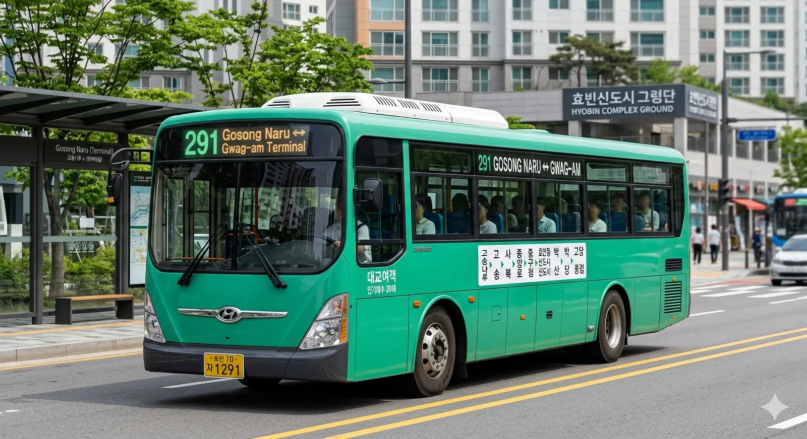

분류: 효빈광역시의 시내버스 | 효빈광역시 지선버스

효빈광역시
지선버스
급행
간선
순환
지선
광역
좌석
마을
공항
투어
[ 펼치기 · 접기 ]
지선버스 노선 번호 (전체)
111
112
121
123
131
132
141
143
151
154
161
171
172
173
181
191
192
193
194
219
221
222
231
232
241
242
251
258
261
262
271
281
291
292
331
334
341
351
361
371
381
391
441
451
461
471
472
481
491
492
522
551
552
561
571
581
582
591
592
612
632
661
671
672
681
682
691
692
752
753
771
781
791
792
793
842
881
891
892
991
효빈 버스 291
효빈광역시 지선버스
| 기점 | 고송나루 |
|---|---|
| 종점 | 곽암종점 |
| 운수사 | 대교여객 |
| 배차간격 | 평일 22분 / 주말 30분 |
| 연계 철도역 |
효빈 버스 291은 효빈광역시의 지선버스 노선이다.
1. 노선 정보
 |
| 운행 모습 |
| 🚌 효빈 버스 291 | |||||
| 기점 | 고송나루 | 종점 | 곽암종점 | ||
| 종점행 | 첫차 | 04:52 | 기점행 | 첫차 | 05:02 |
| 막차 | 22:39 | 막차 | 22:52 | ||
| 배차간격 | 평일 22분 / 주말 30분 | ||||
| 운수사명 | 대교여객 | 인가대수 | 20대 | ||
| 노선 | |||||
2. 개요
효빈광역시 북구 고송나루와 남구 곽암종점을 연결하는 지선버스 노선이다.
3. 정류장 목록
4. 특징
5. 시간표
※ 교통 상황에 따라 오차가 발생할 수 있습니다.